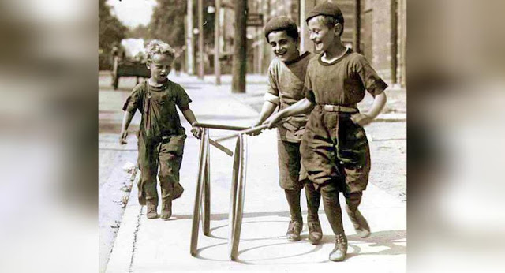

La niñez de mis recuerdos
La tarde otoñal caía rendida como una moza a los brazos de su amado, cuando se oía en la vieja radio: -¡Recordar es volver a vivir!- comentaba con aires nostálgicos el locutor antes de colocar una balada de amor de José José para su público enamorado “Que triste fue decirnos adiós/ cuando nos adorábamos más/ hasta la golondrina emigró/ presagiando el final/ que triste luce todo sin ti/ los mares de las playas se van/ se tiñen los colores de gris/ hoy todo es soledad…”. Mientras la suave música pincelaba de amor los rincones del hogar familiar, mis hijos jugaban ajedrez en el comedor y mi último retoño seguía su larga carrera por los pasadizos, la noche se avecinaba con su negro manto.
-Sí, es cierto- Digo a mis adentros, pensando con los ojos cerrados, auscultando en mi pasado cuando la memoria se desgrana como una mazorca de maíz, dos preguntas vienen de golpe como manotazos de la brisa nocturna: ¿Quién de los pisqueños no ha gozado en carne propia de las delicias frescas de las aguas de una acequia que venía de las serranías para saciar la sed de las chacras sedientas y de los animales del campo, cuando la niñez peinaba sus sueños y la risa era la música cotidiana que endulzaba el silencio? ¿Quién, no ha gozado en el fragor de sus travesuras infantiles aquellos chapuzones en las sangraderas de nuestra ciudad o en el lecho del río, paraíso de nuestras aventuras, donde las deidades del agua dominaban nuestra febril imaginación?
Aquel pisqueño con cabellos de plata, cuarentón como yo, que calla y no responde, nunca lo ha gozado: en vano lanzará la primera piedra a menos que mienta. Siempre se quedará con el interés de retroceder el tiempo, para gozar de aquellos años maravillosos; pero ya es tarde. En verdad, bañarse en las acequias de la ciudad por los años setenta, cuando las aguas nuevas del río Pisco llegaba con su infinidad de camarones colorados y bagres huidizos que se escurrían hacia el fondo, ¡era un gozo fenomenal! Más aún, hacerlo en la compuerta ubicada cerca al enigmático cerro San Luis, no era cualquier cosa. Solo la chibolada más valiente podía disfrutar de sus encantos, no porque el camino era largo; sino porque era un sitio tabú para los niños y adolescentes. Por entonces, nuestros padres nos contaban historias de aparecidos en las noches frías cuando las estrellas y el plenilunio conjugaban en perfecta armonía con nuestros temores a lo desconocido.
Yo evoco, no con tristeza de haber perdido algo sino con la alegría que me di en aquellos tiempos que nunca volverán. Por los festivos e inolvidables años de mil novecientos setenta y tantos vivíamos en una casita de ladrillos a medio construir, por el sector La Esperanza, colindante con antiguas chacras y hierbas secas, pasando por el enorme terral donde jugábamos con la pelota hasta cansarnos y los animales, en la mañana cuando el rocío humedecía la verde grama, satisfacían su hambre.
La casa humilde como el corazón de mi dulce madre era de un familiar de la abuela Dorotea. Sus cuartos eran amplios y oscuros como socavones olvidados por el tiempo, pero su corral parecía el reino febril de los cuyes, conejos, patos, gallinas y pollitos que criábamos para nuestro sustento. La familia de don Otto, un señor jovial y de buen trato, vivía cerca; también la de mi amigo el Viejo, lo decíamos así porque su cara parecía la de un anciano gruñón, cuyos padres criaban chivos y carneros.
Después de almorzar, cuando el sol avivaba sus lámparas, íbamos la gallada del barrio a la carrera con dirección a los cerros hacia la idílica compuerta de San Luis para refrescarnos. En la pandilla éramos mi primo el gringuito Erick, cuyas hermanas eran las más bonitas de todo el vecindario; Ángel, el pastor de chivatos; Enano, su hermano, siempre estaba riendo, cuya madre Irene, una señora muda era muy amiga de mamá pero hablaba hasta con los codos; el Viejo, el más renegón; Chanchoné, mi hermano el más tragón de la familia, y yo, el Diablo, porque era un diamante de mil quilates que ni los mismos profesores podían soportarme; por esa época, ya me habían cambiado de apodo, y la de Tachito quedó en el baúl del recuerdo.
Próximo de los cerros antiguos se hallaba oculta la misteriosa laguna San Luis, cubierto de zacuaras cenicientas, espesuras amarillas y de algodonales blancos; sin embargo, bajo la sombra sempiterna de un sauce tan antiguo como el tiempo estaba la compuerta de fierro: el edén de nuestros juegos cotidianos. Rodeado de gruesas paredes de concreto tan resbaladizo como el aceite por acción de las algas y de la baba de los caracoles, el portón parecía transportarnos al mundo de la alegría y de olvidarnos del transcurrir de las horas. Al abrirse, las aguas caían en un burbujeo mágico a una poza circular más o menos honda donde nos bañábamos y nos ocultábamos entre las vetustas raíces del árbol.
Lo más placentero de esta apacible zona era sacar camarones que tal comandos suicidas se ocultaban en los recónditos huecos o, debajo de las piedras grandes que parecían castillos, para que nuestras madres nos preparen caldo. Otra diablura, para los más terribles del grupo, era pescar bagres que se escurrían por nuestras pequeñas manos dejándonos un hilillo de sangre, por causa de sus aletas puntiagudas.
Cuando el crepúsculo caía con su manto de pereza y los búhos comenzaban su tétrico canto, marchábamos a nuestras casas por el camino pedregoso cubierto de hierba mala y de recuerdos que la máquina del tiempo aún no me hace olvidar.
-“Cualquier día, cualquier hora en cualquier lugar…”- la pegajosa letra de esta balada de María Martha Serra Lima me lleva por el reino de Eolo hacia el laberinto tan querido y tan vivido del recordado callejón de la Comercio, donde viví hasta los ocho años con tanto amor y tanta amistad que perdura aún con el paso inexorable de los años.
